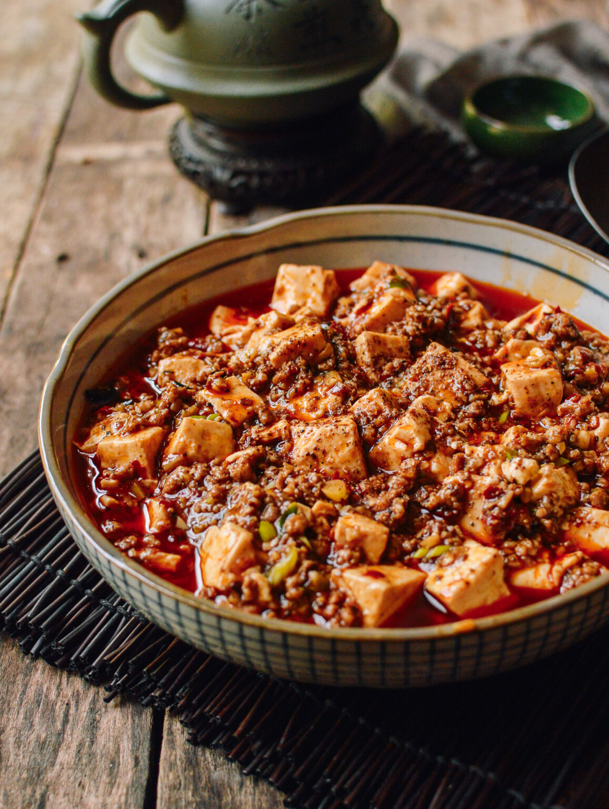

Mapo Tofu

A Delicious Dish from Sichuan Province
This recipe is a favorite of mine for two key reasons, flavor and ease of execution. It is spicy, savory,
and full of that unique tongue-numbing peppercorn spice you can only from authentic Sichuan cuisine. As a
total novice in the kitchen, I can whip up a bowl of Mapo Tofu easily, for a satisfying restaurant quality experience.
Ingredients
- 2 tablespoons Sichuan peppercorns, divided
- 1/4 cup vegetable oil
- 1 teaspoon cornstarch
- 2 teaspoons cold water
- 1 1/2 pounds medium to firm silken tofu, cut into 1/2-inch cubes
- 1/4 pound ground pork
- 3 garlic cloves grated on a microplane grater
- 1 tablespoon fresh ginger grated on a microplane grater
- 2 tablespoons fermented chili bean paste
- 2 tablespoons Xiaoxing wine
- 1/4 cup roasted chili oil
- 1/4 cup finely sliced scallion greens
Steps
- Start Rice in your Rice Cooker
- While Rice is cooking, brown the ground Pork in a frying pan
- While Pork is browning, slice your tofu into cubes
- Once Pork is browned, drain excess fat and add to larger pot
- Add Tofu, garlic, and mapo sauce to larger pot, mix well
- let simmer on medium hit, stirring regularly, until rice is finished cooking
- Serve over rice